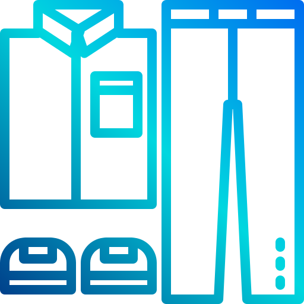

As the final project for 6.08: Embedded Systems at MIT, we were was tasked with an open-ended final project that asked of us to develop a creative and complete Internet of Things system.
Essentially, we were told to do something interesting and hard.
With three other teammates, four weeks, and a budget of $80, I helped build Superdrobe, a smart wardrobe mirror that helps make mornings and laundry days easier for busy people like myself and so many other students at MIT.
Superdrobe is a mirror-based smart device that:

Team: Will Archer, John Lin, Gary Nguyen, Linh Nguyen
Skills: Internet of Things, Project Management, Teamwork, UX Design
Programming: C++, Python, SQL, HTML, CSS, Javascript
We use a clean, simple web interface for user input on wardrobe items and settings because of the limitations of the ESP32 screen and sensors for inputting large amounts of text.

Users can add, delete, and update items from their wardrobe and input profile information through a friendly website UI
With user-defined settings, Superdrobe suggests weather-appropriate outfits and displays current laundry machines availability
From user research, we discovered that people have varying preferences in how involved they wanted to be in picking out individual parts of their outfits. To address these needs, Superdrobe features two different options to help users select outfits.
Make me an outfit presents combinations of wardrobe pieces to make a complete outfit for users who don’t want to go step-by-step selecting each piece of their outfit.

Help me make an outfit filters and sorts wardrobe pieces based on the occasion, preference, and weather for users who want the autonomy to select each piecee themselves.

When all items of a particular type (tops, bottoms, and/or outerwear) have run out of clean wears, Superdrobe notifies the user that a laundry day is in order.
Laundry is tracked by comparing the max number of wears of each item set by users and its current number of wears based of previously selected suggested outfits.
For busy students, information about washing and dryer machine availability for their building is provided in the “Check Laundry” screen. This information is collected through user input on their dorm building and webscraping the Laundry View site.

To save on costs, we constructed the mirror using a shadow box, mirrored window film, and ESP32 LCD display.
For user input, we implemented a scrolling mechanism using three copper sensors on the side of the mirror. There is audio feedback so users know if their taps on the buttons were detected.

As an IoT device, Superdrobe consists of many front-end and back-end components. Below is a block diagram of how all these parts work together.
If you are looking at blank cassettes on the web, you may be very confused at the difference in price. You may see some for as low as $.17 each.